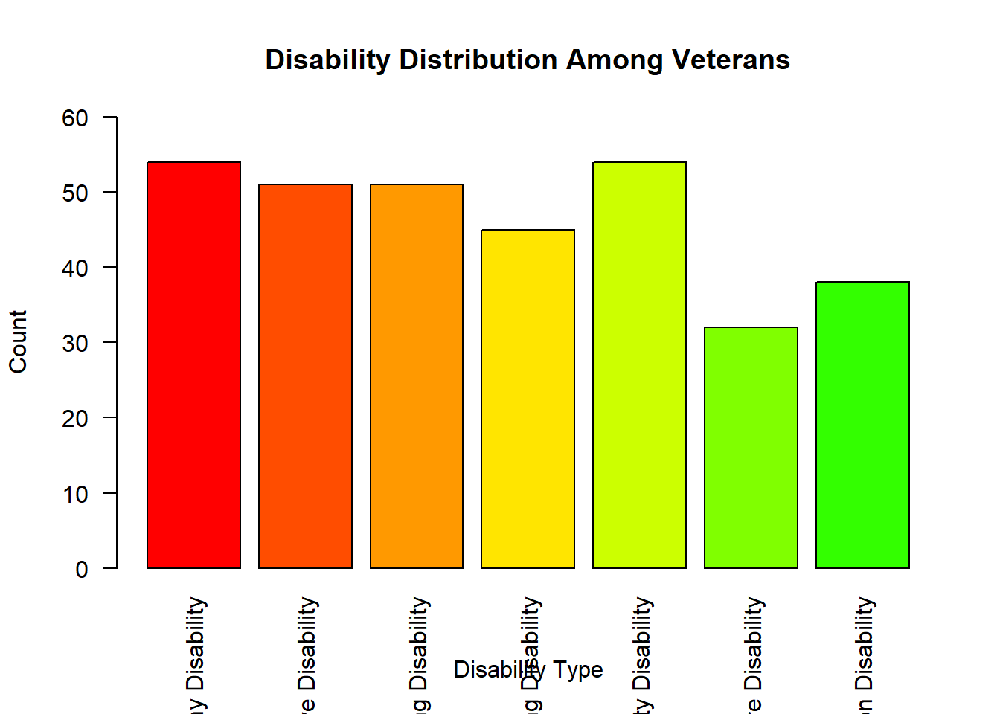

Disability and Health Data System (DHDS) is an online source of state-level data on adults with disabilities. Users can access information on six functional disability types: cognitive (serious difficulty concentrating, remembering or making decisions), hearing (serious difficulty hearing or deaf), mobility (serious difficulty walking or climbing stairs), vision (serious difficulty seeing), self-care (difficulty dressing or bathing) and independent living (difficulty doing errands alone).
Importing and Cleaning Data
Upload raw data to R and install/load packages required to clean data.
#always open it has a project!#install.packages(dslabs)#install.packages(tidyverse)#install.packages(here)library(tidyverse)
Warning: package 'tidyverse' was built under R version 4.2.2
Warning: package 'dslabs' was built under R version 4.2.2
library(here)
Warning: package 'here' was built under R version 4.2.2
here() starts at C:/Users/Raquel/GitHub/MADA/RaquelFrancisco-MADA-portfolio
##here command to construct a path the that file. Never make a hard path to the C drive, only relative paths.#import fileraw <-read_csv(here('dataanalysis_exercise/data/rawDHDSdata.csv'))
Rows: 7168 Columns: 30
── Column specification ────────────────────────────────────────────────────────
Delimiter: ","
chr (19): LocationAbbr, LocationDesc, DataSource, Category, Indicator, Respo...
dbl (7): Year, Data_Value, Data_Value_Alt, Low_Confidence_Limit, High_Confi...
lgl (4): StratificationCategory2, Stratification2, StratificationCategoryID...
ℹ Use `spec()` to retrieve the full column specification for this data.
ℹ Specify the column types or set `show_col_types = FALSE` to quiet this message.
Look at what we have and make a tibble data frame.
str(raw)
spc_tbl_ [7,168 × 30] (S3: spec_tbl_df/tbl_df/tbl/data.frame)
$ Year : num [1:7168] 2020 2020 2020 2020 2020 2020 2020 2020 2020 2020 ...
$ LocationAbbr : chr [1:7168] "HI" "OH" "WV" "ME" ...
$ LocationDesc : chr [1:7168] "Hawaii" "Ohio" "West Virginia" "Maine" ...
$ DataSource : chr [1:7168] "BRFSS" "BRFSS" "BRFSS" "BRFSS" ...
$ Category : chr [1:7168] "Disability Estimates" "Disability Estimates" "Disability Estimates" "Disability Estimates" ...
$ Indicator : chr [1:7168] "Disability status and types among adults 18 years of age or older by veteran status" "Disability status and types among adults 18 years of age or older by veteran status" "Disability status and types among adults 18 years of age or older by veteran status" "Disability status and types among adults 18 years of age or older by veteran status" ...
$ Response : chr [1:7168] "Veteran" "Veteran" "Veteran" "Non-Veteran" ...
$ Data_Value_Unit : chr [1:7168] "%" "%" "%" "%" ...
$ Data_Value_Type : chr [1:7168] "Age-adjusted Prevalence" "Age-adjusted Prevalence" "Age-adjusted Prevalence" "Age-adjusted Prevalence" ...
$ Data_Value : num [1:7168] 8.9 11.9 33.4 4.2 3.4 12.3 74.9 NA 64.9 6.5 ...
$ Data_Value_Alt : num [1:7168] 8.9 11.9 33.4 4.2 3.4 12.3 74.9 NA 64.9 6.5 ...
$ Data_Value_Footnote_Symbol: chr [1:7168] NA NA NA NA ...
$ Data_Value_Footnote : chr [1:7168] NA NA NA NA ...
$ Low_Confidence_Limit : num [1:7168] 6.9 9.9 28.1 3.6 2.9 9.4 73.1 NA 57.6 4.1 ...
$ High_Confidence_Limit : num [1:7168] 11.3 14.2 39.1 5 4.1 16.1 76.6 NA 71.5 10.2 ...
$ Number : num [1:7168] 158 365 348 483 242 ...
$ WeightedNumber : num [1:7168] 20925 158777 73287 42424 259481 ...
$ StratificationCategory1 : chr [1:7168] "Disability Type" "Disability Type" "Disability Status" "Disability Type" ...
$ Stratification1 : chr [1:7168] "Hearing Disability" "Mobility Disability" "Any Disability" "Vision Disability" ...
$ StratificationCategory2 : logi [1:7168] NA NA NA NA NA NA ...
$ Stratification2 : logi [1:7168] NA NA NA NA NA NA ...
$ CategoryID : chr [1:7168] "DISEST" "DISEST" "DISEST" "DISEST" ...
$ IndicatorID : chr [1:7168] "VETIND" "VETIND" "VETIND" "VETIND" ...
$ LocationID : chr [1:7168] "15" "39" "54" "23" ...
$ ResponseID : chr [1:7168] "VET1" "VET1" "VET1" "VET2" ...
$ DataValueTypeID : chr [1:7168] "AGEADJPREV" "AGEADJPREV" "AGEADJPREV" "AGEADJPREV" ...
$ StratificationCategoryID1 : chr [1:7168] "DISTYPE" "DISTYPE" "DISSTAT" "DISTYPE" ...
$ StratificationID1 : chr [1:7168] "HEARDIS" "MOBDIS" "DISABL" "VISDIS" ...
$ StratificationCategoryID2 : logi [1:7168] NA NA NA NA NA NA ...
$ StratificationID2 : logi [1:7168] NA NA NA NA NA NA ...
- attr(*, "spec")=
.. cols(
.. Year = col_double(),
.. LocationAbbr = col_character(),
.. LocationDesc = col_character(),
.. DataSource = col_character(),
.. Category = col_character(),
.. Indicator = col_character(),
.. Response = col_character(),
.. Data_Value_Unit = col_character(),
.. Data_Value_Type = col_character(),
.. Data_Value = col_double(),
.. Data_Value_Alt = col_double(),
.. Data_Value_Footnote_Symbol = col_character(),
.. Data_Value_Footnote = col_character(),
.. Low_Confidence_Limit = col_double(),
.. High_Confidence_Limit = col_double(),
.. Number = col_double(),
.. WeightedNumber = col_double(),
.. StratificationCategory1 = col_character(),
.. Stratification1 = col_character(),
.. StratificationCategory2 = col_logical(),
.. Stratification2 = col_logical(),
.. CategoryID = col_character(),
.. IndicatorID = col_character(),
.. LocationID = col_character(),
.. ResponseID = col_character(),
.. DataValueTypeID = col_character(),
.. StratificationCategoryID1 = col_character(),
.. StratificationID1 = col_character(),
.. StratificationCategoryID2 = col_logical(),
.. StratificationID2 = col_logical()
.. )
- attr(*, "problems")=<externalptr>
summary(raw)
Year LocationAbbr LocationDesc DataSource
Min. :2020 Length:7168 Length:7168 Length:7168
1st Qu.:2020 Class :character Class :character Class :character
Median :2020 Mode :character Mode :character Mode :character
Mean :2020
3rd Qu.:2020
Max. :2020
Category Indicator Response Data_Value_Unit
Length:7168 Length:7168 Length:7168 Length:7168
Class :character Class :character Class :character Class :character
Mode :character Mode :character Mode :character Mode :character
Data_Value_Type Data_Value Data_Value_Alt Data_Value_Footnote_Symbol
Length:7168 Min. : 0.70 Min. : 0.70 Length:7168
Class :character 1st Qu.: 5.40 1st Qu.: 5.40 Class :character
Mode :character Median :10.30 Median :10.30 Mode :character
Mean :20.38 Mean :20.38
3rd Qu.:23.70 3rd Qu.:23.70
Max. :94.80 Max. :94.80
NA's :1695 NA's :1695
Data_Value_Footnote Low_Confidence_Limit High_Confidence_Limit
Length:7168 Min. : 0.40 Min. : 1.20
Class :character 1st Qu.: 4.30 1st Qu.: 6.90
Mode :character Median : 8.20 Median :12.70
Mean :17.96 Mean :23.16
3rd Qu.:20.40 3rd Qu.:27.30
Max. :89.80 Max. :97.80
NA's :1695 NA's :1695
Number WeightedNumber StratificationCategory1
Min. : 7 Min. : 471 Length:7168
1st Qu.: 93 1st Qu.: 33767 Class :character
Median : 257 Median : 120801 Mode :character
Mean : 1244 Mean : 775135
3rd Qu.: 762 3rd Qu.: 418722
Max. :243399 Max. :164671302
NA's :1695 NA's :1695
Stratification1 StratificationCategory2 Stratification2 CategoryID
Length:7168 Mode:logical Mode:logical Length:7168
Class :character NA's:7168 NA's:7168 Class :character
Mode :character Mode :character
IndicatorID LocationID ResponseID DataValueTypeID
Length:7168 Length:7168 Length:7168 Length:7168
Class :character Class :character Class :character Class :character
Mode :character Mode :character Mode :character Mode :character
StratificationCategoryID1 StratificationID1 StratificationCategoryID2
Length:7168 Length:7168 Mode:logical
Class :character Class :character NA's:7168
Mode :character Mode :character
StratificationID2
Mode:logical
NA's:7168
as.tibble(raw)
Warning: `as.tibble()` was deprecated in tibble 2.0.0.
ℹ Please use `as_tibble()` instead.
ℹ The signature and semantics have changed, see `?as_tibble`.
Wrangler data of interest. Goal is to have ~5 variables. Most interesting in this case would be: LocationDesc, Response (Age/Ethnicity/Veteran Status; will have to be split), WeightedNumber (An adjusted version of the crude number of respondents that reflects the number of persons with the attribute in the population.), Stratification 1 (which type of disability)
Now we’ll put this data out:
disdata <- raw %>%select(LocationAbbr, Response, WeightedNumber, Stratification1)str(disdata)
# A tibble: 7,168 × 4
LocationAbbr Response WeightedNumber Stratification1
<chr> <chr> <dbl> <chr>
1 HI Veteran 20925 Hearing Disability
2 OH Veteran 158777 Mobility Disability
3 WV Veteran 73287 Any Disability
4 ME Non-Veteran 42424 Vision Disability
5 MI Non-Veteran 259481 Vision Disability
6 OH Veteran 89980 Cognitive Disability
7 TX Non-Veteran 13660252 No Disability
8 NH Veteran NA Self-care Disability
9 LA Veteran 203697 No Disability
10 AL Veteran 31424 Self-care Disability
# … with 7,158 more rows
Lets now look at veterans vs non-veterans. We’ll pull out veterans then remove the “regions” from the data so there are only easily identifiable state abbreviations.
[1] Hearing Disability Mobility Disability
[3] Any Disability Vision Disability
[5] Vision Disability Cognitive Disability
[7] Self-care Disability Cognitive Disability
[9] Any Disability Self-care Disability
[11] Any Disability Mobility Disability
[13] Vision Disability Hearing Disability
[15] Hearing Disability Any Disability
[17] Vision Disability Self-care Disability
[19] Hearing Disability Cognitive Disability
[21] Cognitive Disability Self-care Disability
[23] Vision Disability Hearing Disability
[25] Cognitive Disability Hearing Disability
[27] Vision Disability Hearing Disability
[29] Mobility Disability Mobility Disability
[31] Cognitive Disability Vision Disability
[33] Hearing Disability Vision Disability
[35] Vision Disability Hearing Disability
[37] Vision Disability Any Disability
[39] Hearing Disability Cognitive Disability
[41] Any Disability Any Disability
[43] Vision Disability Cognitive Disability
[45] Self-care Disability Cognitive Disability
[47] Any Disability Any Disability
[49] Any Disability Vision Disability
[51] Any Disability Any Disability
[53] Any Disability Any Disability
[55] Vision Disability Any Disability
[57] Any Disability Any Disability
[59] Any Disability Cognitive Disability
[61] Any Disability Any Disability
[63] Any Disability Mobility Disability
[65] Independent Living Disability Self-care Disability
[67] Mobility Disability Any Disability
[69] Cognitive Disability Independent Living Disability
[71] Mobility Disability Hearing Disability
[73] Independent Living Disability Cognitive Disability
[75] Independent Living Disability Self-care Disability
[77] Cognitive Disability Cognitive Disability
[79] Cognitive Disability Self-care Disability
[81] Any Disability Mobility Disability
[83] Self-care Disability Hearing Disability
[85] Hearing Disability Hearing Disability
[87] Self-care Disability Independent Living Disability
[89] Hearing Disability Independent Living Disability
[91] Vision Disability Mobility Disability
[93] Cognitive Disability Mobility Disability
[95] Hearing Disability Mobility Disability
[97] Mobility Disability Independent Living Disability
[99] Any Disability Cognitive Disability
[101] Any Disability Cognitive Disability
[103] Self-care Disability Cognitive Disability
[105] Mobility Disability Self-care Disability
[107] Independent Living Disability Independent Living Disability
[109] Vision Disability Mobility Disability
[111] Self-care Disability Any Disability
[113] Vision Disability Independent Living Disability
[115] Any Disability Vision Disability
[117] Independent Living Disability Hearing Disability
[119] Hearing Disability Cognitive Disability
[121] Vision Disability Mobility Disability
[123] Hearing Disability Vision Disability
[125] Any Disability Self-care Disability
[127] Vision Disability Cognitive Disability
[129] Any Disability Mobility Disability
[131] Independent Living Disability Self-care Disability
[133] Vision Disability Independent Living Disability
[135] Cognitive Disability Self-care Disability
[137] Independent Living Disability Cognitive Disability
[139] Mobility Disability Independent Living Disability
[141] Vision Disability Independent Living Disability
[143] Any Disability Mobility Disability
[145] Hearing Disability Independent Living Disability
[147] Vision Disability Hearing Disability
[149] Hearing Disability Hearing Disability
[151] Hearing Disability Cognitive Disability
[153] Independent Living Disability Cognitive Disability
[155] Self-care Disability Any Disability
[157] Vision Disability Mobility Disability
[159] Hearing Disability Mobility Disability
[161] Hearing Disability Cognitive Disability
[163] Hearing Disability Cognitive Disability
[165] Independent Living Disability Vision Disability
[167] Self-care Disability Independent Living Disability
[169] Cognitive Disability Self-care Disability
[171] Any Disability Vision Disability
[173] Mobility Disability Hearing Disability
[175] Mobility Disability Independent Living Disability
[177] Mobility Disability Self-care Disability
[179] Hearing Disability Hearing Disability
[181] Independent Living Disability Independent Living Disability
[183] Self-care Disability Mobility Disability
[185] Vision Disability Hearing Disability
[187] Cognitive Disability Cognitive Disability
[189] Hearing Disability Hearing Disability
[191] Any Disability Hearing Disability
[193] Vision Disability Mobility Disability
[195] Cognitive Disability Mobility Disability
[197] Cognitive Disability Self-care Disability
[199] Independent Living Disability Self-care Disability
[201] Self-care Disability Hearing Disability
[203] Cognitive Disability Any Disability
[205] Self-care Disability Independent Living Disability
[207] Independent Living Disability Self-care Disability
[209] Self-care Disability Independent Living Disability
[211] Hearing Disability Hearing Disability
[213] Independent Living Disability Vision Disability
[215] Any Disability Mobility Disability
[217] Self-care Disability Cognitive Disability
[219] Vision Disability Hearing Disability
[221] Any Disability Vision Disability
[223] Vision Disability Mobility Disability
[225] Mobility Disability Vision Disability
[227] Hearing Disability Self-care Disability
[229] Self-care Disability Self-care Disability
[231] Independent Living Disability Cognitive Disability
[233] Hearing Disability Cognitive Disability
[235] Vision Disability Mobility Disability
[237] Independent Living Disability Independent Living Disability
[239] Vision Disability Mobility Disability
[241] Independent Living Disability Self-care Disability
[243] Mobility Disability Cognitive Disability
[245] Hearing Disability Cognitive Disability
[247] Mobility Disability Independent Living Disability
[249] Hearing Disability Mobility Disability
[251] Independent Living Disability Mobility Disability
[253] Self-care Disability Vision Disability
[255] Vision Disability Independent Living Disability
[257] Mobility Disability Self-care Disability
[259] Vision Disability Cognitive Disability
[261] Independent Living Disability Cognitive Disability
[263] Hearing Disability Independent Living Disability
[265] Cognitive Disability Hearing Disability
[267] Vision Disability Independent Living Disability
[269] Cognitive Disability Self-care Disability
[271] Cognitive Disability Mobility Disability
[273] Independent Living Disability Mobility Disability
[275] Cognitive Disability Mobility Disability
[277] Cognitive Disability Mobility Disability
[279] Cognitive Disability Mobility Disability
[281] Cognitive Disability Mobility Disability
[283] Vision Disability Mobility Disability
[285] Mobility Disability Cognitive Disability
[287] Mobility Disability Independent Living Disability
[289] Cognitive Disability Self-care Disability
[291] Vision Disability Cognitive Disability
[293] Mobility Disability Any Disability
[295] Hearing Disability Any Disability
[297] Independent Living Disability Hearing Disability
[299] Vision Disability Self-care Disability
[301] Cognitive Disability Hearing Disability
[303] Independent Living Disability Cognitive Disability
[305] Self-care Disability Vision Disability
[307] Mobility Disability Cognitive Disability
[309] Independent Living Disability Self-care Disability
[311] Self-care Disability Mobility Disability
[313] Independent Living Disability Independent Living Disability
[315] Independent Living Disability Hearing Disability
[317] Mobility Disability Vision Disability
[319] Cognitive Disability Vision Disability
[321] Any Disability Any Disability
[323] Independent Living Disability Self-care Disability
[325] Hearing Disability Cognitive Disability
[327] Mobility Disability Hearing Disability
[329] Vision Disability Self-care Disability
[331] Mobility Disability Self-care Disability
[333] Cognitive Disability Independent Living Disability
[335] Vision Disability Mobility Disability
[337] Any Disability Self-care Disability
[339] Hearing Disability Self-care Disability
[341] Independent Living Disability Hearing Disability
[343] Any Disability Any Disability
[345] Hearing Disability Cognitive Disability
[347] Hearing Disability Any Disability
[349] Mobility Disability Any Disability
[351] Vision Disability Vision Disability
[353] Independent Living Disability Any Disability
[355] Cognitive Disability Hearing Disability
[357] Mobility Disability Self-care Disability
[359] Cognitive Disability Cognitive Disability
[361] Independent Living Disability Self-care Disability
[363] Independent Living Disability Vision Disability
[365] Mobility Disability Mobility Disability
[367] Any Disability Independent Living Disability
[369] Vision Disability Mobility Disability
[371] Hearing Disability Hearing Disability
[373] Vision Disability Hearing Disability
[375] Vision Disability Cognitive Disability
[377] Any Disability Hearing Disability
[379] Self-care Disability Cognitive Disability
[381] Independent Living Disability Any Disability
[383] Mobility Disability Vision Disability
[385] Any Disability Mobility Disability
[387] Hearing Disability Hearing Disability
[389] Mobility Disability Independent Living Disability
[391] Independent Living Disability Cognitive Disability
[393] Self-care Disability Vision Disability
[395] Mobility Disability Vision Disability
[397] Independent Living Disability Vision Disability
[399] Cognitive Disability Self-care Disability
[401] Any Disability Mobility Disability
[403] Mobility Disability Self-care Disability
[405] Hearing Disability Mobility Disability
[407] Any Disability Cognitive Disability
[409] Mobility Disability Cognitive Disability
[411] Any Disability Hearing Disability
[413] Hearing Disability Independent Living Disability
[415] Mobility Disability Independent Living Disability
[417] Self-care Disability Independent Living Disability
[419] Mobility Disability Any Disability
[421] Independent Living Disability Mobility Disability
[423] Cognitive Disability Any Disability
[425] Vision Disability Mobility Disability
[427] Mobility Disability Hearing Disability
[429] Independent Living Disability Independent Living Disability
[431] Hearing Disability Mobility Disability
[433] Vision Disability Any Disability
[435] Cognitive Disability Hearing Disability
[437] Hearing Disability Any Disability
[439] Hearing Disability Independent Living Disability
[441] Cognitive Disability Hearing Disability
[443] Mobility Disability Independent Living Disability
[445] Any Disability Mobility Disability
[447] Cognitive Disability Self-care Disability
[449] Cognitive Disability Mobility Disability
[451] Vision Disability Any Disability
[453] Cognitive Disability Independent Living Disability
[455] Self-care Disability Mobility Disability
[457] Mobility Disability Cognitive Disability
[459] Independent Living Disability Vision Disability
[461] Hearing Disability Mobility Disability
[463] Cognitive Disability Self-care Disability
[465] Self-care Disability Mobility Disability
[467] Cognitive Disability Independent Living Disability
[469] Vision Disability Any Disability
[471] Vision Disability Self-care Disability
[473] Cognitive Disability Self-care Disability
[475] Self-care Disability Cognitive Disability
[477] Cognitive Disability Independent Living Disability
[479] Mobility Disability Any Disability
[481] Mobility Disability Hearing Disability
[483] Any Disability Independent Living Disability
[485] Hearing Disability Any Disability
[487] Independent Living Disability Vision Disability
[489] Any Disability Independent Living Disability
[491] Self-care Disability Vision Disability
[493] Hearing Disability Hearing Disability
[495] Any Disability Any Disability
[497] Mobility Disability Self-care Disability
[499] Any Disability Vision Disability
[501] Vision Disability Cognitive Disability
[503] Any Disability Vision Disability
[505] Independent Living Disability Self-care Disability
[507] Vision Disability Mobility Disability
[509] Cognitive Disability Independent Living Disability
[511] Any Disability Self-care Disability
[513] Mobility Disability Mobility Disability
[515] Any Disability Mobility Disability
[517] Independent Living Disability Any Disability
[519] Self-care Disability Any Disability
[521] Vision Disability Hearing Disability
[523] Cognitive Disability Mobility Disability
[525] Mobility Disability Any Disability
[527] Cognitive Disability Any Disability
[529] Independent Living Disability Independent Living Disability
[531] Hearing Disability Hearing Disability
[533] Mobility Disability Any Disability
[535] Vision Disability Cognitive Disability
[537] Independent Living Disability Cognitive Disability
[539] Any Disability Cognitive Disability
[541] Mobility Disability Mobility Disability
[543] Independent Living Disability Cognitive Disability
[545] Cognitive Disability Self-care Disability
[547] Independent Living Disability Hearing Disability
[549] Vision Disability Self-care Disability
[551] Mobility Disability Self-care Disability
[553] Cognitive Disability Independent Living Disability
[555] Hearing Disability Any Disability
[557] Independent Living Disability Hearing Disability
[559] Any Disability Mobility Disability
[561] Vision Disability Vision Disability
[563] Any Disability Any Disability
[565] Any Disability Mobility Disability
[567] Vision Disability Any Disability
[569] Any Disability Self-care Disability
[571] Self-care Disability Any Disability
[573] Any Disability Cognitive Disability
[575] Hearing Disability Any Disability
[577] Any Disability Vision Disability
[579] Hearing Disability Hearing Disability
[581] Vision Disability Cognitive Disability
[583] Mobility Disability Independent Living Disability
[585] Cognitive Disability Self-care Disability
[587] Hearing Disability Vision Disability
[589] Independent Living Disability Mobility Disability
[591] Vision Disability Cognitive Disability
[593] Cognitive Disability Any Disability
[595] Hearing Disability Self-care Disability
[597] Hearing Disability Any Disability
[599] Hearing Disability Mobility Disability
[601] Self-care Disability Hearing Disability
[603] Vision Disability Vision Disability
[605] Hearing Disability Any Disability
[607] Any Disability Any Disability
[609] Self-care Disability Vision Disability
[611] Independent Living Disability Any Disability
[613] Any Disability Self-care Disability
[615] Independent Living Disability Hearing Disability
[617] Independent Living Disability Vision Disability
[619] Mobility Disability Self-care Disability
[621] Cognitive Disability Hearing Disability
[623] Hearing Disability Any Disability
[625] Hearing Disability Hearing Disability
[627] Hearing Disability Any Disability
[629] Independent Living Disability Self-care Disability
[631] Vision Disability Cognitive Disability
[633] Hearing Disability Vision Disability
[635] Any Disability Self-care Disability
[637] Vision Disability Independent Living Disability
[639] Cognitive Disability Self-care Disability
[641] Mobility Disability Self-care Disability
[643] Mobility Disability Cognitive Disability
[645] Mobility Disability Independent Living Disability
[647] Any Disability Self-care Disability
[649] Hearing Disability Independent Living Disability
[651] Independent Living Disability Vision Disability
[653] Vision Disability Mobility Disability
[655] Self-care Disability Vision Disability
[657] Independent Living Disability Mobility Disability
[659] Cognitive Disability Mobility Disability
[661] Self-care Disability Any Disability
[663] Any Disability Any Disability
[665] Any Disability Independent Living Disability
[667] Any Disability Any Disability
[669] Hearing Disability Mobility Disability
[671] Vision Disability Independent Living Disability
[673] Cognitive Disability Vision Disability
[675] Mobility Disability Any Disability
[677] Any Disability Hearing Disability
[679] Hearing Disability Cognitive Disability
[681] Self-care Disability Any Disability
[683] Cognitive Disability Independent Living Disability
[685] Any Disability Independent Living Disability
[687] Independent Living Disability Hearing Disability
[689] Mobility Disability Cognitive Disability
[691] Hearing Disability Self-care Disability
[693] Cognitive Disability Mobility Disability
[695] Self-care Disability Mobility Disability
[697] Cognitive Disability Hearing Disability
[699] Cognitive Disability Vision Disability
[701] Hearing Disability Independent Living Disability
7 Levels: Hearing Disability Mobility Disability ... Independent Living Disability
as_factor(vetdata2$LocationAbbr)
[1] HI OH WV ME MI OH AL GU MO KS NY AR OH IA WY MS MD HI MD NE ID FL MS GA MI
[26] AL AK ID LA NJ VT OK MT PR OK WA VT IN ID OK NE VT LA IL KY TN AL AR AK ID
[51] AZ US CA CO AR CA AZ AR CO MO US AL AK MS MD TN KS SC CO NV KS LA MD AL UT
[76] MT TX CT NE ME ND TX AR AZ NY WV DC GA KY IL WY NH MA FL NV SC AL CA DC NY
[101] SD KS OK AZ GU HI NJ VA AL OR PR WI NY MN KS PA KS PA UT WV WV NE MI MS FL
[126] NJ KS LA NC HI NY IL DC WV OR VA MO VT MA AL SC FL KY CO OK IN PA PA PR MS
[151] AZ AR OK ID NY WY GU IL US MO MD DC IL MN TN CT WV MT CT MA TN NV VT ND ME
[176] ID WV CO CA SC PR DE MO NY UT MT ME NH WA SC DE LA WI SD NJ NY RI ND OK LA
[201] TX CA NC NM OR NH PR WY NE WY VT MS CO CA IA AK WV VA MT TN MN TN NC WV KY
[226] UT NM NY VT AZ NY US DC WI GA IN IL AL WA ND LA KS TX SD OK MO WY HI PR NE
[251] WV FL AL NM DC DC DE NH SC IA AZ AK MI KS GA CT US SC TX IN ND OK MS VT CA
[276] MN NH MD GA SD RI IL MT MO PR MN NH NH WY NE IA KY CA RI KS CT TX NE GA SC
[301] MD WI ND OK MD NH RI NM WY MS OH NC LA OR NE TX HI TN MI VT WA IN AZ GA NC
[326] PR VA TN KY CA AZ WA WA MT SD WI HI MS OR FL HI RI MD OH ND PA MN ID MI MN
[351] MO PR TN ME PR WY DE NM IA US NC SC WA CO PA CA PR MS NC TN AR NM RI FL HI
[376] WI DE KS CT MD IN IA MT WA NJ GA VT NH AK CO ME CA TX MN KY AZ AR IL NC VA
[401] NM CT US OR AL ID NV DE PR MT MI IN ME MA IA NM MI VT OK UT SC UT MT PA NH
[426] MD WI NC DC IA CO CT NE RI WA TX DE CT NE US LA IN NV OH WA NM AZ US HI RI
[451] TX VA NM VA OH TN NC SC OR KY MA MT FL UT ID GA MS TX AK OK DE IA TN WI MT
[476] NV UT AK WA MA MI SD GA GA OH TX KY OR NH GU DE ND MO WI LA MI PA NC GU WY
[501] IA KY OR US WI TN FL MN PA NE IL GA NJ DC UT AZ CT DC AK WI MN GU GU US DC
[526] SD IN KS ID AR ME FL IA NJ HI UT RI OH NE DE OR VA MO NV IL KY ME AR IN MN
[551] GU UT MS MI VA ID WA MN VT NV CO MO PR ME ND LA NJ WV SC AR NV HI MS WY RI
[576] OH MD ME HI KY VA MA OH PA CO ME NJ MA MN UT AR SC ND MT AK PA OR TX UT ID
[601] IN GU VA OH MO TN IL LA WA NY AK GU GA NC DE NJ CT KS AR CO WV VA US NY IL
[626] IA SD OR NC PA AL ME NV FL MO SD WV MI AR MA ND PR ME NY WY GU NH OK OH KY
[651] PA OR NE IN AZ TX CA AL NJ MS US PA KY FL VA US MA WY NY WA GU FL KS IN CO
[676] NV NC MA DE FL RI OK AL UT MT SD OH WV NM OR AK MO VA MA IA SC HI CO IN ID
[701] GA IA
54 Levels: HI OH WV ME MI AL GU MO KS NY AR IA WY MS MD NE ID FL GA AK ... NM
# A tibble: 702 × 4
LocationAbbr Response WeightedNumber Stratification1
<chr> <chr> <dbl> <chr>
1 HI Veteran 20925 Hearing Disability
2 OH Veteran 158777 Mobility Disability
3 WV Veteran 73287 Any Disability
4 ME Non-Veteran 42424 Vision Disability
5 MI Non-Veteran 259481 Vision Disability
6 OH Veteran 89980 Cognitive Disability
7 AL Veteran 31424 Self-care Disability
8 GU Veteran 2102 Cognitive Disability
9 MO Veteran 223953 Any Disability
10 KS Veteran 10746 Self-care Disability
# … with 692 more rows
Now that the data is cleaner we can make sum graphs and perform some simple statistics.
(Possible directions of interest include “Does veteran status predispose to a certain disability”, “Are certain disabilities more common in specific states”, etc.)
To be continued…..
##This section added by Vijay Panthayi (Wrangling and Exploring the Data)
First, we are going to save the cleaned data into an Rds file
#saving the cleaned data as an rds file#it appears that vetdata2 is the final, clean data vetdata2 %>%saveRDS(here::here("vetdata2.rds"))
Next, we are going to load the Rds file which previously was made of the cleaned data. Loading the data under “vetdata_clean”.
#loading the vetdata2.rds filevetdata_clean <-readRDS(here("vetdata2.rds"))glimpse(vetdata_clean)
Now that we have loaded the cleaned data, we can explore the previously mentioned interest of “Does veteran status predispose to a certain disability?”.
To do this, we will first grab all the data where the response is “veteran” and then create a bar graph with each stratification to visually see which disability correlates most with being a veteran according to the data.
#create a subset data set of only the observations where the Response variable was "Veteran"vetdata_clean_veteran <-subset(vetdata_clean, vetdata_clean$Response =="Veteran")glimpse (vetdata_clean_veteran)
#create a bar graph of the different disabilitiescounts <-table(vetdata_clean_veteran$Stratification1)par(mar =c(5,4,4,2) +0.1)barplot(counts, main ="Disability Distribution Among Veterans", xlab ="Disability Type", ylab ="Count", col=rainbow(20), las=2, ylim =c(0,60))

#confirm the number of bars equals the number of unique entries for "Stratification1" variableunique(vetdata_clean_veteran$Stratification1)